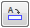
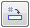

Define a view annotation caption
You define a view annotation caption within the drawing view style. However, you can modify a predefined caption, or create an ad hoc caption, by selecting the view annotation on the drawing and modifying its properties.
Both methods are explained below.
Modify a view annotation caption by editing its properties
-
On the drawing, click a cutting plane line, viewing plane line, or detail envelope.
-
On the command bar, click the Properties button.
-
In the Properties dialog box for the selected view annotation type, click the Caption tab.
-
Use the options on the Caption tab (Viewing Plane, Detail Envelope, Cutting Plane Properties dialog box), to do any of the following”
-
Add to or modify the default caption content using the Caption box and the Properties buttons below it.
-
Change the appearance of the caption text font or the font color using the options in the Format portion of the Caption tab.
-
-
Click OK to update the selected view annotation caption on the drawing.
Define a default view annotation caption in the drawing view style
Within the drawing view style, you can define view annotation captions that automatically display the sheet number of the derived view (the section view, auxiliary view, or detail view) whenever the drawing view and the view annotation reside on different sheets.
In this example, you define a caption for a detail envelope—DETAIL ENVELOPE “E” REF. DETAIL ON (2)—which references the sheet location of the detail view.
-
On the Caption tab (Drawing View Style dialog box), in the View Annotation section:
-
From the Type list, select Detail Envelope.
-
Delete any existing content in the Caption box.
-
Type DETAIL ENVELOPE, and then click

to insert the %VA property text code into the caption text box.The %VA property text code automatically displays the view annotation name (its label) when the detail envelope is created on the source view.
Note:The alphanumeric label is defined in the Specify Annotation Letters dialog box, which you can open from the Annotation tab (Solid Edge Options dialog box).
See the Help topic, Define annotation labels.
-
Type REF. DETAIL ON, and then click

to insert the %VN property text code into the caption text box. -
Select the Show check box to the right of the Caption text box.
-
In the Properties section, select the Show check box to the right of this Properties box:
-
View Sheet Number (%VN)
-
-
-
Click OK to close the Drawing View Style dialog box.
-
Click Apply to close the Style dialog box.
-
On the Annotation tab (Solid Edge Options dialog box):
-
In the Caption section, select the following check box:
-
Show sheet number if parent annotation (e.g. cutting plane) and derived view (e.g. section view) do not reside on the same sheet.
-
-
How do I
Define annotation labelsLearn more
View annotation edit handlesWorking with view annotation captions
Assigning view annotation labels
Look up more details
Specify Annotation Letters dialog boxDefine Object Sequence dialog box
Quick links
Drawing view captionsAutomating captions
Drawing view styles
Drawing view style workflow